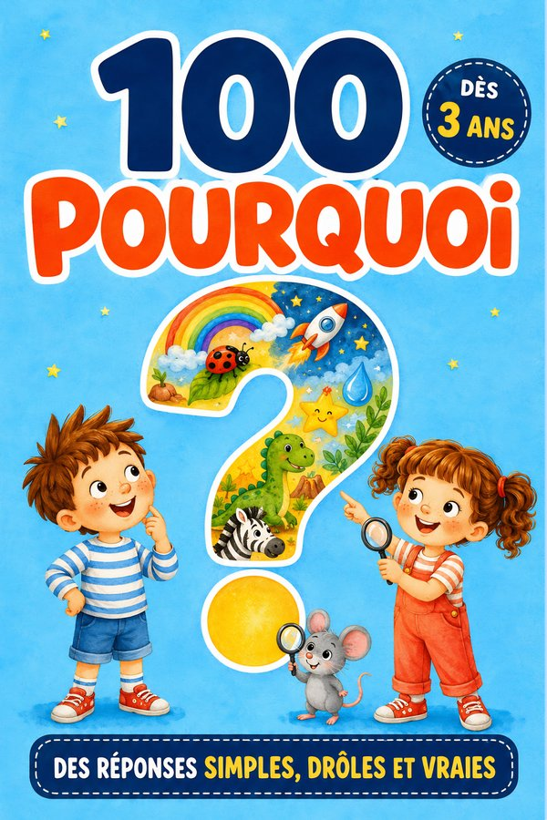
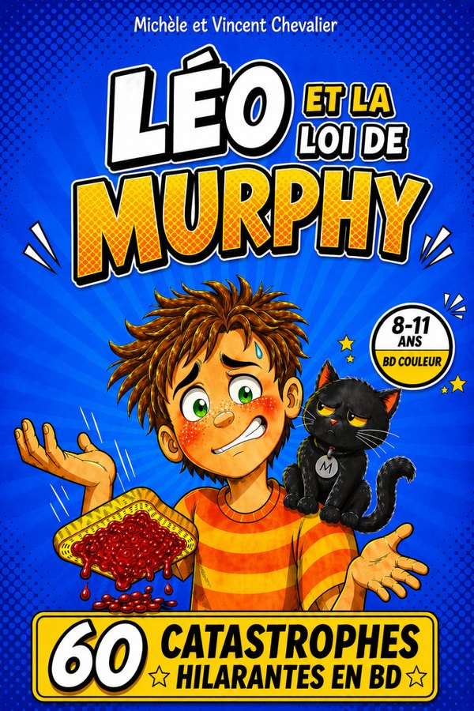

Rose, la petite licorne qui ne brillait pas
Rose refuse de briller, jusqu’au jour où elle découvre sa propre magie. Une histoire douce sur l’acceptation de soi.
★★★★★4,6 · 200 avis12,99 €
Une maison d’édition familiale. Des romans d’aventure, des encyclopédies qui répondent aux vrais « pourquoi » et des albums tendres, écrits et illustrés pour donner le goût de lire — sans jamais faire l’école.
Rose, la petite licorne · Gaspard, 10 ans · 100 Pourquoi des Dinosaures
Chaque livre est imprimé en couleurs, au format broché, et disponible sur Amazon.fr. Les âges indiqués sont ceux pour lesquels le texte a été écrit ; les plus jeunes profitent des histoires en lecture partagée.
Rose refuse de briller, jusqu’au jour où elle découvre sa propre magie. Une histoire douce sur l’acceptation de soi.
Cent questions-réponses simples, drôles et exactes sur les dinosaures. Dès 3 ans, en lecture partagée.

Animaux, espace, corps, nature : cent vraies questions d’enfants, cent réponses courtes et justes. Avec Pip la souris à retrouver.

Tissaïa la petite girafe découvre la savane. Un album tendre à lire avant la nuit.

Sept histoires courtes, drôles et tendres, une pour chaque soir de la semaine.

Un petit manchot frileux, une banquise, et beaucoup de courage. Sur l’amitié, pour les 4-8 ans.

Les animaux les plus étonnants de la planète, à faire bouger page après page.

Grâce à une montre magique, Gaspard traverse les âges : préhistoire, Égypte antique, Japon féodal. Pour les 6-11 ans.

Vivre comme un jeune Sioux et partir sur la trace du Bison Blanc pour sauver la tribu.

Cap sur les îles Marquises, bien avant les premiers explorateurs, avec Tahia, la fille du chef.

Dans une plantation du Brésil colonial, Gaspard se lie avec Joachim, fils d’esclave. Une aventure sur la liberté.

Gaspard remonte les siècles et rencontre ses ancêtres. Le mystère de la montre, enfin.
Soixante astuces vraies pour se débrouiller dans la nature, avec Mila, Tom et Boussole le chien.

Le roquefort, le stéthoscope, la pénicilline : cinquante découvertes nées d’une erreur. Pour les 7-11 ans.
Soixante animaux, soixante super-pouvoirs, et tout est vrai. Pour les 7-11 ans.

Soixante catastrophes hilarantes en BD couleur. Un livre drôle qui apprend à relativiser.
Choisissez l’un de nos livres : il s’ouvre aussitôt dans votre navigateur et se lit en entier. Vous pouvez aussi le télécharger, pour le garder ou le lire hors connexion. C’est la meilleure façon de savoir si votre enfant va accrocher.
Un livre par famille. En échange, nous vous écrirons deux à quatre fois par an pour annoncer nos nouvelles parutions — et jamais rien d’autre.
Un livre par famille — mais vous pouvez le rouvrir autant de fois que vous voulez. Les autres titres sont sur notre page Amazon.

Tout a commencé un dimanche d’hiver. Vincent racontait à ses neveux une histoire inventée à la volée — un garçon de dix ans propulsé au temps des dinosaures. Michèle, sa mère, l’écoutait : « Cette histoire, il faudrait l’écrire. » Ce soir-là, la famille Chevalier commençait sa première aventure éditoriale.
Vincent écrit. Ses voyages — Polynésie, Brésil, Japon — sont devenus les décors de la série Gaspard, 10 ans, avant les albums tendres, les encyclopédies 100 Pourquoi et les livres pour apprendre en riant.
Michèle est coautrice et première lectrice, attentive à chaque mot et à chaque image. C’est elle qui dit « cette fin est trop triste » ou « là, c’est parfait, on n’y touche plus ».
Deux plumes, deux générations, une seule ambition : que l’enfant demande la suite.
Nos illustrations sont créées avec l’aide de l’intelligence artificielle, puis dirigées, retouchées et validées page par page par nos soins. Nous préférons le dire clairement.
Mes petits loulous l’ont dévoré. Les images sont sublimes, ils ont adoré la découverte de la vie des Sioux.
Très jolie et intéressante histoire, ma petite fille de 4 ans réclame à l’infini sa lecture.
J’ai pris ce livre pour mon fils de 8 ans qui aime les histoires d’aventure et il l’a vraiment apprécié.
Plus de 1 350 avis publiés sur Amazon.fr, note moyenne 4,4 sur 5 (relevé de septembre 2026). Voir tous les avis
Par un livre court à sa mesure. Nos romans sont découpés en chapitres brefs, avec une illustration presque à chaque page, pour que l’enfant ait très vite le sentiment d’avancer. Pour un lecteur hésitant de 7 à 10 ans, Gaspard, Voyageur du temps est le bon point de départ ; pour les plus petits, 100 Pourquoi se lit en piochant une question au hasard.
Oui. Tous nos livres sont imprimés en couleurs, au format broché, avec au minimum une illustration par double page — et le plus souvent une par page.
Chaque tome se lit indépendamment. Nous conseillons tout de même de commencer par Voyageur du temps, qui présente Gaspard et sa montre : la suite en devient plus savoureuse.
Beaucoup, sans s’en rendre compte. Chaque roman de Gaspard se passe à une époque réelle — Sioux, Marquises, Brésil colonial — et les encyclopédies répondent à de vraies questions avec des réponses exactes, vérifiées et formulées pour son âge. L’apprentissage vient avec le plaisir, jamais à sa place.
Vous choisissez un livre, vous indiquez votre email, et le livre illustré complet s’ouvre immédiatement dans votre navigateur : vous pouvez le lire en ligne ou le télécharger en PDF. Nous vous écrivons ensuite deux à quatre fois par an, pour les nouvelles parutions seulement ; vous pouvez vous désinscrire à tout moment en écrivant à editions.chevalier.contact@gmail.com.
Pour l’instant, nos livres sont imprimés à la demande et vendus uniquement sur Amazon.fr, ce qui nous permet de les proposer en couleurs à un prix raisonnable. Pour une commande groupée (école, bibliothèque, association), écrivez-nous.
Commandes groupées, exemplaires de lecture pour les classes, rencontres avec les auteurs, service de presse : écrivez-nous, nous répondons sous 48 heures.
Responsable : Famille Chevalier.
Données collectées : adresse email et livre choisi, uniquement via le formulaire du livre offert et l’inscription aux nouvelles parutions.
Finalité : remise du livre choisi (lecture en ligne ou téléchargement), et, avec votre consentement, l’annonce de nos nouvelles parutions (deux à quatre envois par an).
Base légale : votre consentement explicite (case à cocher).
Conservation : tant que vous êtes inscrit(e) ; suppression sur simple demande.
Partage : vos données ne sont ni vendues ni transmises à des tiers.
Vos droits : accès, rectification, suppression, opposition — en écrivant à editions.chevalier.contact@gmail.com. Demande traitée sous 48 heures.
Éditeur du site : Famille Chevalier, activité d’édition indépendante.
Directrice éditoriale : Michèle Chevalier.
Contact : editions.chevalier.contact@gmail.com
Hébergeur : GitHub, Inc. — 88 Colin P Kelly Jr St, San Francisco, CA 94107, États-Unis.
Propriété intellectuelle : l’ensemble du contenu de ce site (textes, illustrations, couvertures) est protégé par le droit d’auteur. Toute reproduction est interdite sans autorisation écrite.
Cookies : ce site n’utilise aucun cookie de traçage ni outil d’analyse tiers.
Droit applicable : droit français.